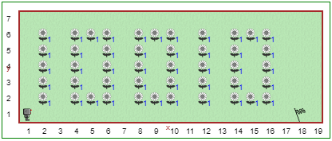

Galbūt pastebėjote, kad Robotukui užtrunka šiek tiek laiko kol jis pereina prie kitos komandos; taip yra todėl, kad jis turi "pagalvoti" apie tai, ko jo prašote. Tačiau laiką, kurį Reeborgas galvoja, galima pakeisti naudojant funkciją think() su argumentu, pvz:
galvoti(500)
Skaičius 500, esantis tarp skliaustų, vadinamas funkcijos argumentu. Kuo mažesnis skaičius, tuo mažiau laiko Robotukas užtruks prieš apsvarstydamas kiekvieną veiksmą. Reikšmė 1000 reiškia, kad Reeborgas užtrunka apie 1 sekundę, kol pagalvoja. Kartais Robotukas turi ką nors apgalvoti, apie ką jūs nežinote, todėl kartais gali atrodyti, kad jis galvoja ilgiau, nei tikitės. Kodas galvoti(0) liepia "Reeborg" judėti kuo greičiau.
Atidarykite Robotuko aplinkos septintą lygį.
Robotukui ką tik sukako 18 metų ir jis nori, kad visi tai sužinotų. Robotukas mano, kad būtų smagu pasodinti ramunėlių kieme ir taip atšvęsti šią progą. Robotukas yra robotas ir moka tik dvejetainę skaičiavimo sistemą, o 18 dvejetainiu kodu yra: 10010.
Sukurkite šias funkcijas:
piešti_1() skaičiaus 1 ramunėlių pasodinimuipiešti_0() skaičiaus 0 ramunėlių pasodinimuiNaudodamiesi sukurtomis funkcijomis pasodinkite Robotuko gimtadienio žinutę. Baigus vieno skaičiaus sodinimą, pastatykite Robotuką tinkamai kito skaičiaus sodinimui. Būtinai naudokite komentarus ir tuščias eilutes, kad sprendimas būtų lengviau skaitomas!
Lygis 6: Funkcijų saugojimas bibliotekoje Turinys Lygis 8: Klauskite